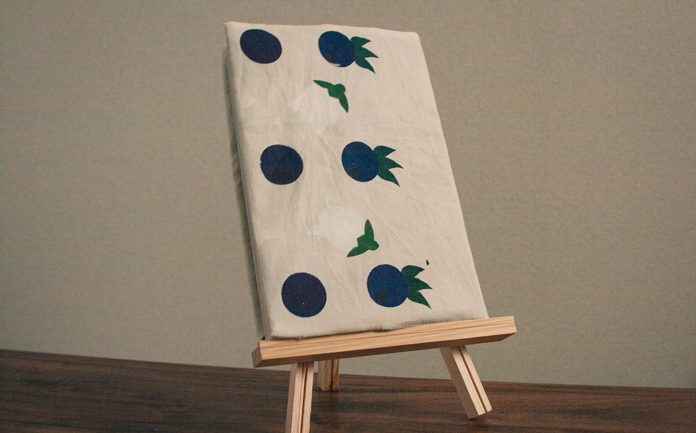

半文庫のブックカバー
情報環境デザイン学科 3年
松藤美沙紀（キム）
UXデザインの卓で「半文庫」というサービスを提案しました。このサービスでは主に本の貸し借りを行うものなので、その際に使用するためのブックカバーを制作しました。知性、知恵という花言葉をもつブルーベリーの実と花を模様に使い、私自身の本に対するイメージを表現しています。 Goods design | ブックカバー


UXデザインの卓で「半文庫」というサービスを提案しました。このサービスでは主に本の貸し借りを行うものなので、その際に使用するためのブックカバーを制作しました。知性、知恵という花言葉をもつブルーベリーの実と花を模様に使い、私自身の本に対するイメージを表現しています。 Goods design | ブックカバー